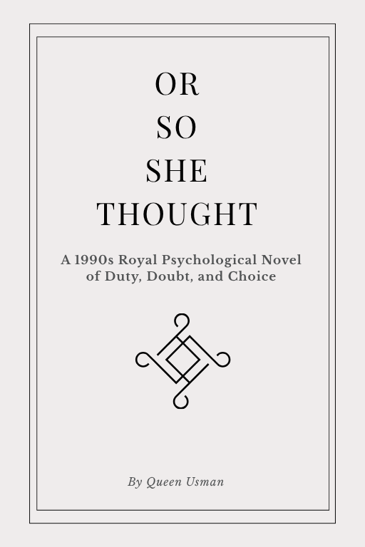

"Every crown demands obedience; some demands are settled in silence."
A psychological novel of power, silence, and royalty
Chapters, contents, and the full interactive reading experience.
Through twenty-six detailed chapters, the narrative unfolds the complex inner life of protagonists trapped under royal surveillance, investigating what remains of an individual when every spoken utterance requires unspoken clearance.
"She had mastered the peculiar art of looking directly at power without letting it witness her appraisal. In the court of Norwyn, to be seen thinking was already a confession."
— Chapter I, The Etiquette of Shadows"Permission was never denied aloud. It was simply delayed through formalities so meticulously polite that refusal took the shape of patience."
— Chapter XI, The Glass Conservatory"There is no sanctuary like an empty ceremony. When the rites begin, nobody looks at your eyes; they only examine your knees."
— Chapter XVIII, Cold RitesThe kingdom, court, places, customs, institutions, and history.
Norwyn is a realm defined by monumental stone, cold sea mists, and the heavy atmosphere of an era poised on the brink of profound institutional transition.
The seat of supreme royal protocol. Built from grey quarried granite, its halls are constructed to dampen whispers and magnify the sound of footsteps.
Where royal decrees, family lineages, and private correspondences are cataloged and quietly edited to preserve the crown’s infallibility.
Perched over the cold coastal waters, these gardens serve as the sole place where courtiers risk speaking without the formal permission of the chamberlain.
Elizabeth, Anne, Edward, Elias, Isabel, and the people surrounding them.
The figures who navigate the quiet corridors of Norwyn, bound together by hierarchy, tactical silence, and survival.
Possessing an incisive mind and an unyielding composure. She has learned that in rooms designed to make you kneel, silence is the only autonomous ground left.
Observant and perceptive, Anne recognizes the subterranean shifts in the court long before formal decrees are issued from the dais.
A man shaped by generational obligations. His loyalty to the crown is matched only by the exhaustion of maintaining an unbroken exterior.
Keeper of uncataloged records in the lower archives, Elias understands that paper outlasts sovereign dynasties, provided it is kept dry.
The custodian of high court etiquette. Isabel enforces royal discipline not through punishment, but by convincing courtiers that dissent is vulgar.
The faceless collective behind closed double doors whose decisions arrive not with fanfare, but as quiet procedural realities.
The ideas and questions the novel explores without settling them.
When an individual practices obedience for years to protect their position, at what exact moment does the mask adhere permanently to the skin?
Norwyn treats silence as a civic virtue. But does refusing to name a fracture prevent it from spreading, or simply guarantee that the collapse will be total?
The younger courtiers did not draft the treaties that govern their days, yet they must pay the daily tax of composure to honor them.
If every action requires sanction from another, can genuine autonomy ever exist, or is all freedom merely a provisional favor?
Its origins, development, abandoned ideas, surviving scenes, and the making of Norwyn.
The manuscript began as a broader study of social currency before sharpening into a focused psychological drama centered on sovereign permission, composure, and royal etiquette.
Dozens of scenes were pruned away to ensure that tension resided not in loud arguments, but in the quiet spaces between characters who cannot afford to speak freely.
The stone corridors, heavy drapes, and sound-absorbing carpets were designed with architectural intention—every physical room mirrors the emotional containment of its inhabitants.
The pivotal conversations—in the cold conservatory, over ceremonial teas, and before the Council's bench—remain the anchor points around which the entire 26 chapters revolve.
Ongoing writing, discoveries, fragments, and reflections from the making of the book.
Notes on why the most compelling dialogue in fiction happens in what characters deliberately maneuver to avoid saying aloud.
An exploration of how the physical stone of Norwyn shapes the psychology of the court, making quietness an act of survival.
Queen Usman and her work.
Receive private dispatches, behind-the-scenes chapter commentaries, and notification of the novel’s forthcoming release directly to your inbox.